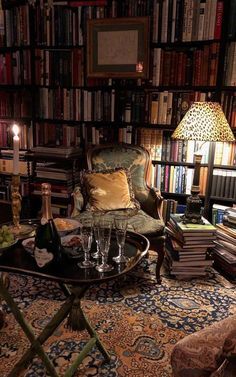
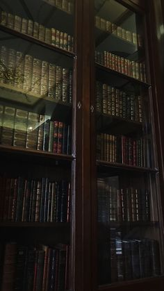
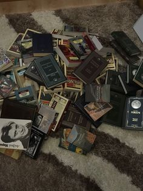
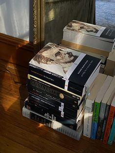
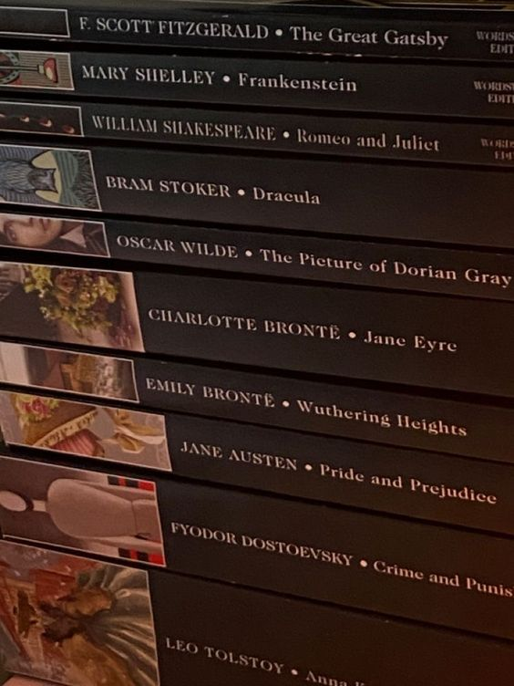
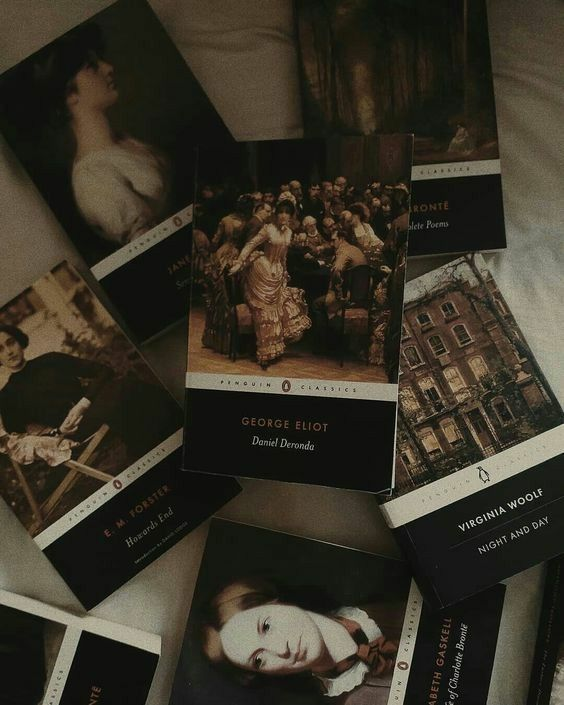
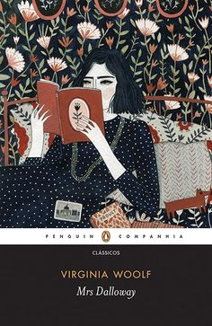
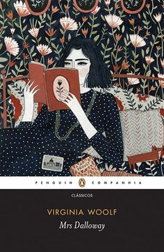

Livros, minha paz !



Sempre tive interesse por saber mais sobre as coisas, então encontrei nos livros uma oportunidade
de saciar esses meus anseios, já lia alguns livros quando
era criança, como Diario de um banana, mas
foi somente quatro anos atrás que comecei a ler, nesse tempo desenvolvi gosto pelos gêneros :
- Romances Russos
- Classicos
- Literatura Brasileira
- Filosofia e Sociologia



Apesar desses serem meus favoritos, normalmente eu lei de tudo, mas claro que tenho meus
favoritos, isso sempre está mudando, porém agora a lista é :
- Os Irmãos Karamozov
- Mrs.Dalloway
- Livro do Desassossego
 


No momento na minha lista de leitura está baseada em um livro do projeto Literatela
e alguns que são de meu proprio interesse, pensando nisso deixei uma lista abaixo:
Lista de leituras
- Uma teoria sobre adaptação
- Tempos de chumbo
- Origem da familia e da propriedade privada
- Diario de um homem superfulo